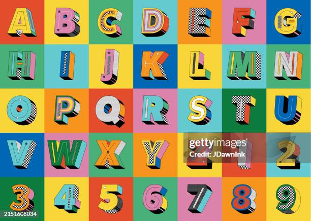

Fontes em HTML e CSS

Tipografia
Assim como explicado no capítulo de cores, as fontes também expressam a capacidade de despertar sentimentos nas pessoas. O termo tipografia vem do grego týpos graphía, que significa impressão e escrita. O mundo da tipografia iniciou-se após a invenção de Jonannes Gutenberg, criador da prensa mecânica, dando origem à Revolução da Imprensa.
Fontes
A letra pode também ser denomida glifo e caractere, denomina-se família tipográfica ou tipo, o conjuto de glifos que possuem as mesmas características anatômicas. As fontes são conjutos de glifos que formam uma família tipográfica. Além disso, cada fonte possue a capaciedade de provocar sentimento no leitor, seja fontes mais finas resultando em beleza, suavidade, até fontes grosssas para provocar surpresa e prender a atenção.
Anatomia
Essa é a anotomia de um tipo
- Traço (Stroke): Linha principal de uma letra (reta ou curva).
- Haste (Stem): Traço vertical principal, como em H ou L.
- Barra (Crossbar/Bar): Traço horizontal que cruza uma haste, como no A ou t.
- Serifa (Serif): Pequeno traço decorativo no final de uma haste, fundamental em fontes serifadas.
- Bojo (Bowl): Traço curvo que forma o corpo básico de letras como 'o' ou 'b'.
- Contador (Counter): Espaço em branco fechado dentro de uma letra (ex: o centro do 'o')
- Abertura (Aperture): Espaço parcialmente fechado, como no 'C' ou 'S'.
- Ombro (Shoulder): Arco curvo que se liga à haste, como no 'n' ou 'h'.
- Perna (Leg): Traço inclinado para baixo, como no 'k' ou 'R'.
- Braço (Arm): Traço que se projeta horizontalmente ou diagonalmente para fora do corpo, como no 'E' ou 'T'.
- Cauda (Tail): Traço descendente, como no 'Q' ou 'g'.
- Altura-x (x-height): Altura das letras minúsculas sem ascendentes ou descendentes (como 'x').
- Ascendente (Ascender): Parte de uma minúscula que se estende acima da altura-x (ex: 'h', 'b').
- Descendente (Descender): Parte de uma minúscula que desce abaixo da linha de base (ex: 'g', 'p').
- Terminal: Acabamento cônico ou curvo de um traço (ex: ponta do 'f').
- Ponto (Dot/Tittle): O ponto sobre o 'i' e 'j'.
Categorias
Os tipos também são classificados por suas categorias, baseada principalmente na presença ou ausência da serifa. Fontes Serifadas, as mais classicas muito utilizado pela praticidade, e pela capacidade de guiar os nossos olhos graças aos prolongamentos das fontes serifadas. Atualmente não é muito utilizada em telas pois acabam cansando a vista mais facilmente. As fontes não serifadas, não possue serifa, bastante utilizadas em páginas web. As fontes monoespaçadas, organizam as letras todas em um mesmo tamanho, desde do M até o I. Fontes script são as letras cursivas, que imitam a escrita humana. Por fim, as fontes display, fontes extremamente chamativas e curiosas.
Utilização
É possível usar as fontes usando a tag <font-family> ou importando elas com @font-face.
Tamanhos
Os tamanhos de fontes podem ser personalizados com as medidas: cm, in, pt, px e em. As mais recomendadas são o px e o em. Usa-se o <font-weight> e o <font-size>. Os shorthands são atalhos no CSS, eles simplificam várias linhas em uma só, como o shorthand font, bolder, margin e entre outros.
Alinhamentos
Existe 4 alinhamentos de texto: text-align left - alinha pra esquerda, text-align right - alinha pra direita, text-align center - alinha no centro, e o text-align justify - alinha a esquerda e a direita
Como encontrar
Existe inúmeros sites que fornecem fontes gratuitas, porém, o mais recomendado é Google fonts.
.png)